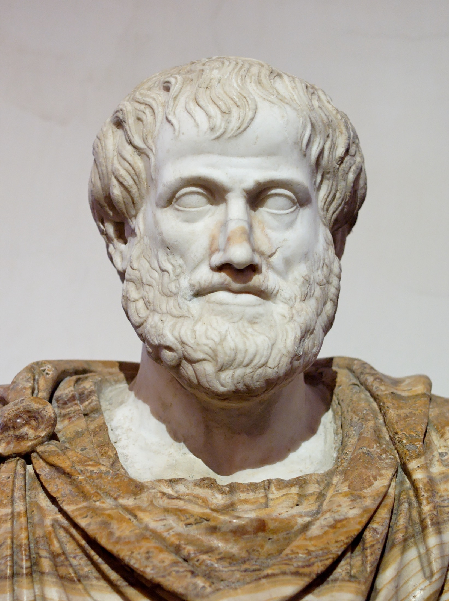

4. gaia · Estagirako Aristoteles
Aristotelesengan sartzeko
Aristotelesekin (o.a.a. 384-322) heldutasunera iristen da greziar filosofia eta, aldi berean, bira bat egiten du. Hogei urtez Platonen (o.a.a. 427 inguru - o.a.a. 347 inguru) ikasle izanik, maisuarengandik jasotzen du jakintza sistematiko baten anbizioa, baina norabidea irauli egiten dio: Platonek Formen mundu bereizi baterantz begiratzen zuen lekuan, Aristotelesek mundu honetara itzultzen du begirada, gauza konkretu eta aldakorren mundura, eta barrutik azaltzeko asmoa hartzen du. Horregatik eskaintzen diogu, Platoni bezala, gai oso bat, eta harenaren paraleloan eraikia gainera: errealitatea, ezagutza, arima, bertutea eta politika, gai berberak, ia beti kontrako erantzunarekin.
Autore bat, sistema bat. Haren pentsamendu osoa artikulatzen duen pieza funtsezko erabaki bat da: forma ez da aparteko zeru batean bizi, gauzen baitan dago baizik. Zerbait dena izanarazten duena, haren esentzia, immanentea zaio, ez transzendentea (§14). Hortik dator gainerako guztia. Forma sentikorrean badago, ezagutzea ez da beste mundu bat gogoratzea izango, zentzumenetatik abiatzea eta haietatik unibertsala abstraitzea baizik (§15); arima gorputz biziaren forma bada, ez da hura biziko duen substantzia bereizi bat izango, haren bizi-printzipioa baizik (§16); gizakiaren ongia bere eginkizun propioa ondo betetzean badatza, bertutea biziz forjatzen den aztura bat izango da (§17), eta zoriontasuna, berriz, arrazoiaren araberako bizitza oso baten jarduera (§18); eta bizitza hori elkarrekin baino ezin denez erdietsi, etika politikara isurtzen da (§19). Keinu bera dabil sistema osoan goitik behera: ideala eta bereizia errealaren eta konkretuaren lurrera ekartzea. Keinu hori ulertzen duenak Aristoteles ulertzen du.
Bizitza eta zirkunstantzia. Aristoteles Estagiran jaio zen, Greziako iparraldeko hiri txiki batean, Mazedoniako erregearen medikuaren seme; jatorri horretatik, Atenastik urrun eta medikuntzatik hurbil, eratorri ohi da bizitza osoan lagunduko dion naturaren behaketarako zaletasuna. Hamazazpi urterekin Platonen Akademian sartu zen, eta han eman zituen hogei bat, maisua hil zen arte. Geroago Mazedoniako gortera deitu zuten, Alexandro gaztea (o.a.a. 356-323) hezteko, etorkizuneko konkistatzailea. Atenasera itzulita, bere eskola propioa sortu zuen. Eta, Alexandro hilik, hiria mazedoniar zen ororen aurkako etsaitasunez bete zenean, Aristoteles Kaltzisera erretiratu zen, tradizioak egozten dion esaldiaren arabera, atenastarrek filosofiaren aurka bi aldiz bekatu egin ez zezaten, Sokratesen kondena aipatuz (§06)1. Han hil zen hurrengo urtean.
Lizeoa. Aristotelesek o.a.a. 335 inguru Atenasen sortu zuen eskolak Lizeoa zuen izena, haren inguruetan zegoen Apolo Lizeoren santutegiagatik; kideei peripatetikoak deitu zitzaien, beharbada lorategietan zehar paseatuz (peripatein) irakasteko ohituragatik. Akademia ez bezala, matematikara eta dialektikara emana baitzegoen hura, Lizeoa ikerketa enpirikoko gune bat izan zen batez ere: liburutegi erraldoi bat eta datu-bilduma zabalak bildu zituen, eta existitzen den ororen deskribapen sistematikoari ekin zion, logikatik biologiara eta fisikatik politikara. Guregana iritsi den Aristotelesen obra, hein handi batean, eskola-lan horretatik jaio zen, eta harekin diziplinatan banatutako jakintzaren eredua inauguratu zuen, gaur egun ere ezagutza ordenatzen duena.

§14 · Aristoteles: errealitatea
Aristotelesen metafisika kritika batetik jaiotzen da, eta izatearen eta aldaketaren azalpen oso batean burutzen da.
Forma bereiziei egindako kritika. Aristotelesek onartzen du, Platonekin batera, klase bereko banakoek zerbait unibertsala partekatzen dutela: izen berberaz izendatzeko bide ematen digun huraxe. Baina ukatu egiten du unibertsal hori banakoetatik bereizita subsistitzen denik, bere kabuz. Funtsezko objekzioa hau da: Forma platonikoek ez dute azaltzen azalduko zutela agindutakoa, eta beharrik gabe biderkatzen dituzte entitateak: mundu bakar baten ordez, biren arrazoia ematera behartzen gaituzte.
Objekzio horri hiru eragozpen gehitzen zaizkio:
- Formek ez dute higiduraren eta aldaketaren berri ematen. Geldiak eta aldaezinak dira; nekez izan daitezke, beraz, sentikorraren etengabeko bilakabidearen kausa.
- Hirugarren gizonaren argudioa. Gizaki konkretuek komunean dutenak Forma bat eskatzen badu, Forma horrek eta gizakiek komunean dutenak goragoko beste Forma bat eskatuko du, eta horrela behin eta berriz, erregresio infinitu batean.
- Partaidetza azaldu gabe geratzen da. Gauzek Formak «imitatuko» lituzketeneko erlazioa metafora bat da: arazoa izendatzen du, ez du ebazten.
Forma gauzatik bereiztea, ondorioztatzen du Aristotelesek, gauza azaltzeari uko egitea da.
Substantzia eta kategoriak. Haren abiapuntu positiboa hau da: «izatea era askotara esaten da»2. «Den» guztia ez da modu berean. Zerbaitez esan daitekeen guztiaren artean, hamar kategoria bereizten ditu Aristotelesek: substantzia, gauza bat zer den galderari erantzuten diona, eta bederatzi modu akzidental, hots: kantitatea, kualitatea, erlazioa, lekua, denbora, posizioa, egoera, ekintza eta pasioa.
Guztien artean, substantzia (ousía) da lehena. Beste guztia hartaz predikatzen da, bera ezertaz predikatu gabe: kolorea, tamaina edo posizioa beti dira substantzia batenak. Eta zentzu hertsian substantzia dena, lehen substantzia, banako konkretua da: gizaki hau, zaldi hau. Eratorriz baino ez diegu deitzen bigarren substantzia hura sailkatzen duten espezieari eta generoari, gizakiari edo animaliari esaterako. Lehen mailako erreala, beraz, ez da unibertsala, entitate singularra baizik.
Hilemorfismoa. Zer da entitate singular hori? Bi printzipio bereiztezinez osaturiko konposatu bat: materia (hýle) eta forma (morphé)3. Materia substratu determinatugabea da, determinazio bat jasotzeko gai dena. Brontzea materia da estatuarekiko; zura, mahaiarekiko. Bere kabuz, materia ez da ezer aktoan. Forma, berriz, materia hori determinatu eta aktualizatzen duen printzipioa da: zerbait dena izanarazten duena, haren esentzia.
Bien arteko konposatua, synolona, da substantzia eskubide osoz:
\[\text{substantzia} = \text{materia} + \text{forma}\]
Platonekiko distantzia zehatz-zehatza da. Formak ez du aparteko zeru batean bizilekurik: gauzan bertan dago, haren egitura eratzaile gisa. Tesi hori, forma immanentearena, Aristotelesen metafisikaren bihotza da, eta ondoren datorren guztiaren giltza.
Lau kausak. Zerbait ezagutzea, Aristotelesentzat, haren kausak ezagutzea da; hau da, zerbait zergatik den eta zergatik den den bezalakoa azaltzen duten faktoreak ezagutzea. Lau bereizten ditu:
- Kausa materiala. Zerbait zerez egina dagoen, huraxe. Estatua baten kausa materiala brontzea da; izaki bizidun batena, hura osatzen duten haragia eta hezurrak.
- Kausa formala. Gauza determinatzen duen eta halako motatakoa izanarazten dion forma edo esentzia. Estatuaren kausa formala brontzeak jasotzen duen irudia da; organismo batena, halako bizidun klasekoa izanarazten dion forma espezifikoa.
- Kausa eragilea. Aldaketa eragiten duen edo prozesua abian jartzen duen agentea. Estatuaren kausa eragilea eskultorea da; seme batena, sortzen duen aita.
- Xedezko kausa (télos). Zerbait zertarako den edo zertarako bilakatzen den, jotzen duen xedea. Estatuaren xedezko kausa zerbitzatzen duen helburua da; haziarena, bihurtzera destinatuta dagoen landare heldua.
Izaki naturaletan, azken hirurak bat etortzera jotzen dute. Izaki bizidun baten forma da, aldi berean, halako izanarazten duena, haren garapena zuzentzen duena eta garapen horrek jotzen duen xedea. Horrela, xedezko kausak gehigarri bat izateari uzten dio, eta naturaren azalpena gobernatzera igarotzen da.
Aktoa eta potentzia. Geratzen da teoria platonikoak ebazten jakin ez zuen arazoa: aldaketa. Aristotelesek kontzeptu korrelatibo pare batez azaltzen du. Potentzia (dýnamis) oraindik ez dena izateko edo bihurtzeko gaitasuna da. Aktoa (enérgeia), gaitasun horren gauzatze efektiboa. Hazia garia da potentzian; hazitako landarea, garia aktoan.
Ez da gauza bera itsua izateagatik ez ikustea eta begiak itxita edukitzeagatik ez ikustea. Bigarrena bakarrik da ikusle potentzian, eta aktoan izango da begiak ireki bezain laster. Aldaketa oro, orduan, potentziatik aktora igarotzea da, eta materia formak aktualizatzen duen potentzia gisa ulertzen da. Zerbaiten erabateko gauzatzeari, bere xedea erdietsi duenean, entelekia deitzen dio Aristotelesek: perfekzio aktualizatua. Aktoa potentzia baino lehenagokoa da, balioan eta izatean, zeren potentzia ez baita ulertzen hura definitzen duen aktoari erreferentzia eginez baizik.
Teleologia eta lehen motorra. Natura osoa xedeetara bideraturiko prozesuen sistema bat baldin bada, «naturak ez du ezer alferrik egiten» printzipioaren arabera, kosmos osoak higiduraren azken azalpen bat eskatzen du. Higitzen den oro beste batek higitua da. Infinituraino atzera ez jotzeko, lehen motor ibilge bat egon behar da, higitua izan gabe higiaraziko duena.
Lehen motor horrek ez du bultzaka higiarazten, desiraren objektu gisa baizik: «maitatuak maitalea higiarazten duen bezala higiarazten du». Akto hutsa da, materiarik eta potentziarik gabea, betierekoa eta aldaezina, eta haren jarduera bakarra bere burua pentsatzen duen pentsamendua da. Horixe da Aristotelesen «jainkoa»: ez mundua egiten duen sortzaile bat, mundua erakartzen duen eta hari ordena ematen dion xedea baizik. Aktoaren eta potentziaren arteko bereizketa eta motor ibilgearen froga izango dira, mendeak geroago, Akinoko Tomasek Jainkoaren existentzia frogatzeko bere bost bideak aterako dituen harrobia (§27).
§15 · Aristoteles: ezagutza
Metafisikan Aristotelesek forma gauzei itzultzen badie, ezagutzaren teorian ondorioa ateratzen du. Unibertsala sentikorrean bertan badago, eta ez aparteko mundu batean, ezagutzea ezingo da izan zentzumenetatik aldentzea beste mundu bat gogoratzeko, haietatik abiatzea baizik. Hemen jokatzen da Platonekiko kontrasterik garbiena, eta komeni da bi atalak parean irakurtzea4.
Jatorria: adimenean ez dago ezer, zentzumenetatik igaro ez denik. Platonentzat, ezagutzea gogoratzea da: jakitea ariman dago jada, jaio aurretik Formak begietsi baitzituen, eta zentzumenek haren oroitzapena esnatu baino ez dute egiten (§10). Aristotelesek irauli egiten du planteamendua. Arimak, jaiotzean, ez du inolako jakiterik bere baitan: idazteko ohol baten antzekoa da, artean ezer idatzirik ez duena. Ez dago sortzetiko ideiarik. Ezagutzaren material guztia sentsaziotik sartzen da; zentzumenik gabe, ez genuke ezer ikasiko. Zentzumenek singularra atzematen dute —kolore hau, soinu hau—; adimenak unibertsala atzematen du, baina ez du aparteko mundu batetik hartzen, zentzumenek eskaintzen diotenetik baizik. Geroago tesi hau laburbilduko duen maxima eskolastikoa —«adimenean ez dago ezer, aurrez zentzumenetan egon ez denik»— ez da Aristotelesena, baina leialtasun osoz jasotzen du haren abiapuntua5.
Prozesua: sentsaziotik unibertsalera, abstrakzioaren bidez. Nola igotzen da sentitutako singularretik jakindako unibertsalera? Mailaz mailako eskala batetik. Sentsazio errepikatutik oroimena geratzen da; gauza beraren oroitzapen askotatik esperientzia sortzen da, gauzak behatutako kasuetan hala direla dakiena; eta esperientziatik, indukzioz, printzipio unibertsalera iristen da adimena, gauzak beti hala direla eta zergatik dakiena. Eragiketa erabakigarria abstrakzioa da: adimenak partikularretan presente dagoen forma unibertsala —materiarekin eta indibidualarekin nahasia dagoena— bereizi, eta bere horretan hartzen du gogoan. Unibertsala ez da asmatzen, ez gogoratzen: emandakotik erauzi egiten da. Benetan existitzen da gauzetan, eta adimenak isolatu baino ez du egiten6. Horixe da anamnesia platonikoaren ifrentzu zehatza: ez da aurretiko jakite batetik jaisten, esperientziatik igotzen da.
Irismena: zientzia, printzipioak eta intuizioa. Noraino iristen da ezagutza hau, eta zertan bermatzen da? Zentzu hertsian jakiten dena unibertsala eta beharrezkoa da: bestela izan ezin denaz dago zientzia —episteme—, ez singularraz, singular den aldetik; gizon konkretu honetaz ez dago zientziarik, gizaki ororentzat balio duenaz baizik. Eta zientzia frogatzailea da: bere ondorioak silogismoz deduzitzen ditu, printzipioetatik abiatuta. Baina printzipio horiek ezin dira, beren aldetik, frogatu, infinituranzko erregresioan erori gabe: adimen-intuizioz atzematen dira —noûsaz—, esperientziatik abiatutako indukzioak ageriko bihurtu dituenean. Hortik datoz, aldi berean, jakite aristotelikoaren bermea eta muga. Bermea: formak gauzetan daudenez, eta ez aparteko mundu batean, zientziak errealitate sentikorra bera du aztergai, eta ez haren kopiak; mundua ezagutzea posible da, haren egitura adigarria barnekoa duelako. Muga: frogatutako jakite oro, azken batean, frogatzen ez diren baizik eta ikusi egiten diren lehen printzipio batzuen gainean bermatzen da; eta indibidual hutsaz ez dago zientziarik. Platonek ezagutza mundu betiereko eta bereizi batean ainguratuz ziurtatzen zuen; Aristotelesek, aldiz, bizi garen mundu bakarraren esperientzian ainguratzen du, eta horren prezioa da jakiteak, azken buruan, printzipioen intuizioan oinarritu beharra.
§16 · Aristoteles: psikea
Aristotelesen arimaren doktrina hilemorfismoa (§14) izaki biziari aplikatzea da. Substantzia sentikor oro materiaren eta formaren konposatu bat bada, izaki bizia gorputz bat da, arima (psyché) batek biziarazia: gorputza da haren materia, eta arima, haren forma7.
Arima, gorputzaren akto. Arima ez da gorputzean bizi den substantzia bereizi bat, gorputz bizi baten forma baizik: bizirik egonarazten duena eta dena izanarazten diona. Aristotelesek honela definitzen du: gorputz natural organiko baten (hots, organoz hornitutako baten) aktoa, entelekia. Arima eta gorputza ez dira elkarren ondoan jarritako bi gauza, substantzia bakar baten forma eta materia baizik. Horregatik ez du zentzurik galdetzeak ea arima eta gorputza bat diren, ez baitu zentzurik galdetzeak ea bat diren argizaria eta hartan inprimaturiko irudia.
Hemen Aristotelesek maisuarekin hausten du. Platonentzat, arima errealitate banangarri bat da, gorputzaren aurrekoa eta gainekoa: aurretik existitzen da, berraragiztatu egiten da eta bizirik irauten dio; gorputza haren gartzela da (§11). Aristotelesentzat, arima gorputzaren forma da, eta forma eta materia bereiztezinak dira: oro har, arimak ez dio gorputzari bizirik irauten, ikusmenak begiari bizirik irauten ez dion bezala. Ez dago transmigraziorik, ez aurre-existentziarik. Biziduna batasun bat da.
Arimaren mailak. Arima ez da ahalmen bakar bat, funtzio-multzo hierarkizatu bat baizik. Aristotelesek hiru maila bereizten ditu, eta bakoitzak aurrekoa hartzen du bere baitan:
- Arima begetatiboa, edo nutritiboa. Landareei dagokiena. Elikaduraren, hazkuntzaren eta ugalketaren funtzioak betetzen ditu.
- Zentzumenezko arima. Animaliei dagokiena. Aurrekoari sentsazioa, desira eta mugimendua eransten dizkio.
- Arima arrazionala, edo intelektiboa. Gizakiari dagokiona. Adimena (noûs) eransten du: pentsatzeko eta unibertsala ezagutzeko gaitasuna.
Gizakiak hiru mailak ditu: bizi da, sentitu egiten du eta pentsatu egiten du. Haren berezitasuna hirugarrenean dago, arrazoian: horrexek bereizten du gainerako bizidunetatik, eta horixe da haren etikaren (§17) eta polisko bizitzaren (§19) erroa.
Adimena. Nola ezagutzen du arima arrazionalak? Forma unibertsalak (§15) atzemateko, adimenak guztiak jaso ahal izan behar ditu; eta guztiak jasotzeko, ez du aldez aurretik haietako bat bera ere izan behar. Horregatik konparatzen du Aristotelesek oholtxo huts batekin. Baina formak jasotzen dituen adimen horren ondoan, adimen hartzailearen ondoan, adimen eragile bat postulatzen du Aristotelesek: formak adigarri egiten dituena, sentikorretik abstraituz, argiak koloreak ikusgarri egiten dituen bezala. Adimen eragile horretaz baieztatzen du, pasarte labur bezain eztabaidatu batean, banangarria, hilezkorra eta betierekoa dela. Horixe da zirrikitu bakarra arimaren zerbaitek gorputzari bizirik iraun ahal izateko, eta haren zentzu zehatzaz eztabaidan dihardute interpretatzaileek Antzinarotik.
§17 · Aristoteles: bertuteak
Aristotelesen etikak bizitza onaz galdetzen du: zertan datzan ondo bizitzea eta zoriontsu izatea. Galdera hori §18n erantzuten da, eudaimoniaren kontzeptuarekin. Atal honek aurreko galderari erantzuten dio: nola iristen da gizakia ona izatera? Erantzuna: bertutearen bidez. Eta bertutea, Aristotelesentzat, ez da jakite bat, ezta dohain bat ere, aztura bat baizik8.
Bertutea aztura gisa. Bertutea (areté) izaeraren jarrera egonkor bat da, aztura bat (héxis), errepikapenez eskuratzen dena. Ez gara bertutetsu jaiotzen, eta zer dagoen ondo jakite hutsak ere ez gaitu bertutetsu bihurtzen. Justu egiten gara ekintza justuak eginez, eta ausart, ekintza ausartak eginez, musikaria joz egiten den bezalaxe. Izaera ekintzen jalkina da: behin eta berriz egiten duguna gara.
Honetan, Aristotelesek Sokrates eta Platon zuzentzen ditu. Intelektualismo sokratiko-platonikoaren arabera, ongia ezagutzea aski da ongi jokatzeko, eta inork ez du gaizkia jakinaren gainean egiten (§07). Aristotelesek ohartarazten du hori faltsua dela: jakin dezakegu zer den zuzena eta, hala ere, ez egin, desirak garaituta. Bertutea ez da jakite kontua soilik; nahi izatearena ere bada, eta desira azturaren bidez hezi izatearena.
Bertute etikoa eta bertute dianoetikoa. Aristotelesek bi bertute mota bereizten ditu, arimaren zein zati perfekzionatzen duten kontuan hartuta. Bertute etikoak, edo izaerarenak, hala nola ausardia, neurritasuna edo justizia, ohituraz eskuratzen dira, eta arrazoiari obeditzen dion arimaren zatian daude. Bertute dianoetikoek, edo intelektualek, hala nola jakinduriak (sophía) eta zuhurtziak (phrónesis), arrazoia bera perfekzionatzen dute, eta irakaskuntzaren bidez eskuratzen dira.
Erdigune egokia. Zertan datza bertute etiko bat? Bi bizioren arteko erdigune egokian, bata gehiegikeriazkoa eta bestea gabeziazkoa. Ausardia koldarkeriaren eta ausarkeriaren arteko erdigunea da: hark gabeziaz huts egiten du; honek, gehiegikeriaz. Eskuzabaltasuna, zekenkeriaren eta zarrastelkeriaren artekoa da; neurritasuna, sorgortasunaren eta neurrigabekeriaren artekoa.
Erdigune hori ez da puntu finko bat, ezta batezbesteko aritmetikoa ere: pertsona bakoitzari eta egoera bakoitzari dagokion erdigunea da; arrazoiak zehaztuko lukeena, eta gizaki zuhurrak zehaztuko lukeen bezala. Kontua ez da erdizka sentitzea edo erdizka jokatzea, une egokian, behar den pertsonaren aurrean eta behar den moduan egitea baizik. Horregatik, ekintza orok ez du erdigune egokirik onartzen: ez dago hilketa bat egiteko modu zuzenik, ezta bekaizkeria sentitzekorik ere. Ekintza eta pasio batzuk berez dira txarrak.
Zuhurtzia. Kasu bakoitzean erdigune hori aurkitzen duen bertutea zuhurtzia da (phrónesis), jakinduria praktikoa. Ez da aski jarrera onak izatea; jarrera horiek egoera zehatzari aplikatzen dakien bereizmena behar da, hemen eta orain zer komeni den ondo deliberatzen duena. Zuhurtziak, horrela, bi bertute motak lotzen ditu: bera ere bertute intelektuala da, baina bera da izaeraren bertuteak gobernatzen dituena eta haiei forma ematen diena. Hura gabe, asmo ona itsua da.
§18 · Eudaimonia
Eudaimonia, «zoriontasuna» itzuli ohi duguna, antzinako etikaren erdiko kontzeptua da, eta Aristotelesen doktrina osoa hartara ordenaturik dagoen xedea9.
Zoriontasuna, ongirik gorena. Ekintza orok eta hautu orok ongiren batera jotzen dute. Baina gauza bakoitza beste baten begira desiratuko bagenu, eta hura hirugarren baten begira, desirak ez luke amaierarik izango. Behar da, beraz, azken xede bat, bere buruagatik nahi duguna eta ez beste ezerengatik: ongirik gorena. Xede hori, dio Aristotelesek, eudaimonia da. Izenean denak bat datoz, denek nahi baitute zoriontsu izan; desadostasuna zertan datzan esatean hasten da. Batzuek atseginean jartzen dute, besteek ohoreetan, besteek aberastasunean. Aristotelesek gizakiari berezkoa zaion horretan bilatuko du erantzuna.
Eginkizunaren argudioa. Zein da gizakiaren ongia? Analogiaz arrazoitzen du Aristotelesek. Txirularariaren edo eskultorearen ongia bere eginkizun propioa (érgon) ondo betetzean datza. Gizakiak eginkizun propio bat baldin badu, hura ondo betetzean egongo da haren ongia. Eta haren eginkizun propioa ez da bizitzea, landareekin partekatzen baitu, ezta sentitzea ere, animaliekin partekatzen baitu, arimaren arrazoi-zatiaren jarduera baizik (§16). Beraz, giza ongia, eudaimonia, arimaren bertutearen araberako jarduera da, bizitza oso batean zehar gauzatua.
Hemendik ondorio erabakigarri bat dator: zoriontasuna ez da egoera bat, ezta sentimendu bat ere, jarduera bat baizik. Ez da aski bertutea edukitzea; gauzatu egin behar da. Ez da zoriontsu bizitza osoa lo ematen duena, bertutetsuena izanda ere, ondo jarduten duena baizik.
Atsegina eta kanpoko ondasunak. Jarduera bertutetsu horrek atsegina dakar berekin, bakoitzak maite duen horretan aurkitzen baitu atsegina, eta onak ekintza onetan. Atsegina ez da xedea, baina jarduera burutuaren koroa da. Ezaugarri errealista bat gehitzen du Aristotelesek: zoriontasunak kanpoko ondasunen gutxieneko bat ere behar du, hala nola osasuna, lagunak edo nolabaiteko lasaitasun ekonomikoa. Ez bertutea on izateko aski ez delako, baizik eta zorigaitz batzuek bizitza onaren egikaritza betea oztopa dezaketelako. Honetan, zoriontasuna zoritik erabat independente egingo lukeen idealismo batetik aldentzen da.
Bizitza politikoa eta bizitza kontenplatiboa. Zer jarduerak gauzatzen du beteen zoriontasun hori? Bizitza onaren bi forma bereizten ditu Aristotelesek. Bizitza politikoa, edo praktikoa, bertute etikoak komunitatean egikaritzearena da: justiziaz eta adorez deliberatzen eta jarduten duen hiritarrarena. Bizitza kontenplatiboa, edo teoretikoa, jarduerarik gorenarena da: egia bere buruagatik kontenplatzen duen adimenarena. Aristotelesen ustez, azken hori da zoriontasunaren forma gorena, guregan dagoen jainkozkoenaren jarduera delako, jarraituena eta autarkikoena; baina aitortzen du bizitza politikoa dela gehienen eskura dagoena, eta bigarren mailan zoriontsu deitzen dio.
Aurrekari platonikotik zoriontasunaren etiketara. Sokratesengandik eta Platonengandik jasotzen du Aristotelesek uste sendo bat: bizitzaren xedea eudaimonia dela, eta arrazoiak gobernatu behar duela hura (§07, §12). Baina hiru puntutan eraldatzen du herentzia hori:
- Ukatu egiten du ongia Forma banandu eta bakar bat denik (§14): ongia era askotara esaten da, eta giza ongia bizitza honetan erdiets daiteke.
- Intelektualismoaren ordez azturaren etika bat jartzen du: zoriontsu izatea ez da jakitea bakarrik, izaera forjatu izana baizik (§17).
- Onartzen du zoriak eta kanpoko ondasunek pisua dutela bizitza burutuan.
Horrekin, zoriontasunaren etiken eredua finkatzen du Aristotelesek: irizpide morala ongian eta xedean jartzen dutenena. Mendeak geroago, eredu horrek eginbeharraren etikekin egingo du talka, irizpidea eginbeharraren forman jartzen dutenekin (§52).
§19 · Aristoteles: politika
Politika, Aristotelesentzat, etikaren jarraipena da. Gizakiaren xedea bizitza ona bada (§18), eta bizitza hori komunitatean bakarrik bada posible, orduan komunitateaz arduratzen den zientzia, politika, da zientzia praktikoetan gorena: bakar baten ona ez, guztiena bilatzen duena10.
Polisa naturaz. Gizakia, naturaz, animalia politikoa da (zóon politikón). Ez da taldean bakarrik bizi, beste animalia batzuk bezala, baizik eta politikoki antolatutako komunitate batean, polisean, hartan bakarrik erdiets baititzake bere buruari aski izatea, autarkia, eta harekin batera bizitza ona. Hitza (lógos) emana zaionez, zer den justua eta zer injustua eztabaida dezake, eta gaitasun horrek bizitza politikora destinatzen du. Hortik dator esaldi ospetsua: komunitatean bizi ezin dena, edo, bere buruaz aski duenez, haren beharrik ez duena, ez da polisaren parte; piztia da, edo jainko.
Polisa, gainera, naturaz indibiduoa baino lehenagokoa da, osoa zatia baino lehenagokoa den bezala. Komunitatetik isolatutako gizaki batek ezingo luke bere natura garatu, gorputzetik bereizitako esku batek esku izateari uzten dion bezalaxe. Kontua ez da polisa haren aurretiko indibiduoen arteko itun batez eratzen dela, geroago kontratuaren teoria modernoak defendatuko duen bezala (§43); kontua da indibiduoa haren barruan bakarrik iristen dela erabat gizaki izatera.
Hiritartasuna. Poliseko biztanle guztiak ez dira hiritarrak. Hiritarra, Aristotelesentzat, gobernu- eta justizia-eginkizunetan parte hartzen duena da: deliberatzen eta epaitzen duena, eta txandaka gobernatzen duena eta gobernatua dena. Kanpoan geratzen dira emakumeak, atzerritarrak eta esklaboak, eta baita, bertsiorik murriztaileenean, eskulangileak ere, lanak ez baitie uzten bizitza politikoak eskatzen duen aisiarik.
Haren doktrinaren alderik eztabaidagarriena esklabotzaren justifikazioa da. Aristotelesek dio gizaki batzuk naturaz direla esklabo, obeditzeko jaioak, eta esklabotza komeni zaiela. Bere printzipioekin beraiekin talka egiten duen tesia da, gizateriaren zati bati ukatzen baitio berak gizakiaren definitzailetzat jarritako arrazionaltasuna, eta agerian uzten du noraino dagoen haren pentsamendu politikoa bere garaiko mugei lotuta.
Gobernu-formak. Aristotelesen teoria politikoaren muina konstituzioen sailkapena da, hiri askoren konstituzioen azterketa konparatuaren fruitua. Bi irizpideren arabera sailkatzen ditu: zenbatek gobernatzen duten (batek, gutxi batzuek ala askok) eta noren interesetan gobernatzen duten (guztion onaren ala berenaren). Bien gurutzaketatik sei forma ateratzen dira, hiru zuzen eta hiru desbideratu11:
| Zenbatek gobernatzen duten… | Guztion onaren interesean (forma zuzena) | Norberaren interesean (forma desbideratua) |
|---|---|---|
| Batek | Monarkia | Tirania |
| Gutxi batzuek | Aristokrazia | Oligarkia |
| Askok | Errepublika (politeia) | Demokrazia |
Forma zuzenek hiri osoaren ona bilatzen dute; desbideratuek, gobernatzen dutenena. Aristotelesek, gainera, haietako biren zentzu ekonomikoa zehazten du: oligarkia, izatez, aberatsen gobernua da, eta demokrazia, pobreena. Komeni da ohartaraztea haren «demokrazia» ez dela gurea: gehiengo pobrearen gobernua izendatzen du, bere interesean gobernatzen duena, eta ez legearen agindupeko ordezkaritza bidezko gobernua, azken hori hurbilago bailegoke berak errepublika deitzen duenetik12.
Konstituziorik onena. Zein da gobernu-formarik onena? Zentzu absolutuan, monarkia edo aristokrazia lirateke, bertute apartako gizon bat edo talde bat balego. Baina hori ia inoiz gertatzen ez denez, Aristotelesek, errealista, defendatzen du hiri gehienentzat konstituziorik onena errepublika (politeia) dela: erregimen misto bat, oligarkiaren eta demokraziaren ezaugarriak konbinatzen dituena, erdi mailako klase zabal batek eta legearen aginteak eutsia. Erdi mailako klasea da haren egonkortasunaren giltza: ez pobreak bezain premiatsua, ez aberatsak bezain harroa, huraxe da neurriz obeditzeko eta agintzeko gaitasunik handiena duena. Erdigune egokia da (§17), politikari aplikatua.
Aristoteles Platonen aurrez aurre. Platonen proiektu politikoarekiko kontrasteak (§13) biak argitzen ditu. Platon justiziaren ideia batetik abiatzen da, eta handik diseinatzen du hiri perfektua, filosofoek gobernatua, haiek baitira Ongia ezagutzen duten bakarrak; haren erregimen ideala aristokrazia da zentzu hertsian, onenen gobernua, eta gainerako formak degradazio baten etapak dira. Aristoteles hiriak diren bezala hartuta abiatzen da: konparatu eta sailkatu egiten ditu; mesfidati begiratzen dio boterea jakintsu ideal batzuen eskuetan pilatzeari, eta argi eta garbi kritikatzen du Platonek bere zaindarientzat proposatzen zuen ondasunen eta emakumeen komunitatea. Platonek hiri perfektua bilatzen duen tokian, Aristotelesek posible den hiririk onena bilatzen du; Platonek gutxi batzuen jakindurian jartzen duen tokian konfiantza, Aristotelesek klaseen orekan eta legean jartzen du. Haren filosofia osoa zeharkatzen duen lekualdatze bera da: idealetik eta bereizitik errealera eta konkretura.
«Filosofiaren aurkako bigarren krimenaren» pasadizoa iturri berantiarretatik dator, eta ziurrenik apokrifoa da, baina ondo erretratatzen du haren egoera: mazedoniar metekoa izanik, Aristoteles ez zen Atenasko hiritar, eta babesik gabe geratzen zen giro politikoa Mazedoniaren aurka jartzen zen bakoitzean.↩︎
Tò òn légetai pollachôs formulak bizkarrezurra ematen dio Metafisikari; haren Erdi Aroko ondorengotza luzeaz, ikus §27.↩︎
Formak hemen Aristotelesen eidos edo morphé izendatzen du: gauza bakoitzaren esentzia gauzaren beraren barrutik eratzen duen printzipio immanentea. Ez da nahastu behar Forma platonikoarekin (§09), bereizia eta transzendentea baita; gai honetan azken horri erreferentzia egiten zaionean, beti erabiliko da «Forma platonikoa» sintagma osoa.↩︎
Ikus §10. Ezagutzaren jatorria Platonengan eta Aristotelesengan —anamnesia abstrakzioaren aurrez aurre— disertazioak elkarren aurrean jartzera gonbidatzen duen perspektiba bateraezinen bikoteetako bat da.↩︎
Nihil est in intellectu quod prius non fuerit in sensu formula eskolastikoek geroago landutako sorkaria da; haren erro aristotelikoa Arimari buruz obran dago, handik baitator ohol garbiaren irudia ere, gero tabula rasa gisa ospetsu bihurtuko zena.↩︎
Adimenak sentikorretik abiatuta adigarriak isolatu eta aktualizatzeko darabilen ahalmena —adimen eragilea— arimaren doktrinari dagokio; ikus §16.↩︎
Arimaren doktrina Arimari buruz (De Anima) tratatuan azaltzen da.↩︎
Iturria Nikomakori buruzko etika da.↩︎
Eudaimonia «zoriontasuna» itzultzen da, baina haren zentzua «loratzea» edo bizitza burutua da hobeto: ez aldarte bat, ondo gauzatzen den bizitza bat baizik.↩︎
Iturria Politika da.↩︎
Aristotelesen sei formako sailkapena Platonen Politikarikoaren (302c–d) egokitzapena da; hark legearekin ala legerik gabe gobernatzearen arabera bereizten zituen gobernu-formak. Aristotelesek irizpidea aldatu egiten du: ez legezkotasuna, baizik eta guztion ona norberaren interesaren aurrean.↩︎
Aristotelesek askoren gobernuaren forma zuzenerako gordetzen du politeia izena. Terminoa, hemen «errepublika» gisa itzultzen duguna, Platonen Errepublikari grekoz izenburua ematen dion berbera da (Politeía), nahiz eta han obra osoa izendatzen duen, eta ez gobernu-forma hau.↩︎